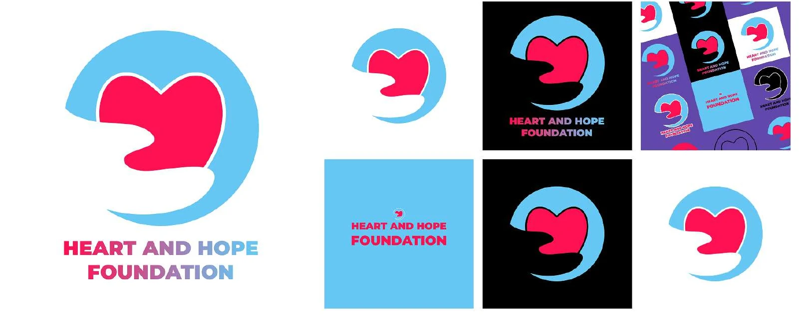

My Role
- Logo design
- Brand identity
Context
Heart and Hope is a foundation that needed a visual identity.
Objective
Build the visual identity for the Heart and Hope Foundation.
Process
Visual decisions visible in the final artwork:- A pink-red heart set inside a light-blue circle forms the mark.
- A wordmark with a pink-to-blue gradient connects the two colours of the mark.
- The identity is shown on light, black, blue, and patterned backgrounds to test flexibility.
Deliverables
- Logo mark and wordmark in several colour variations.
- Application examples: square brand tiles and a repeating pattern.
Results
No outcome data has been recorded for this project.
Gallery
